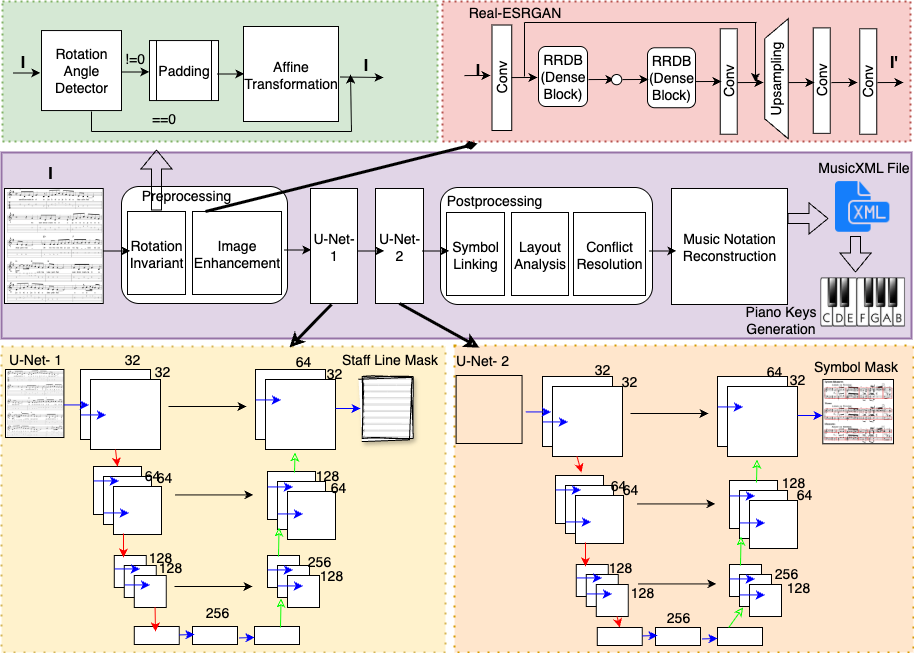
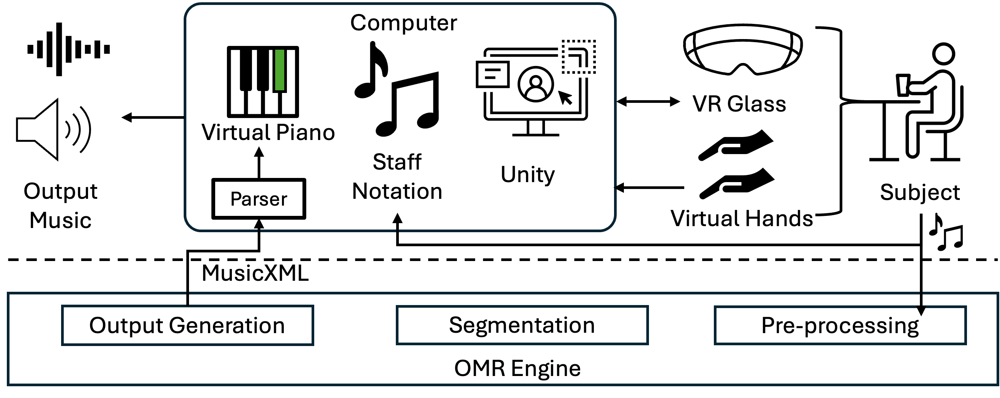
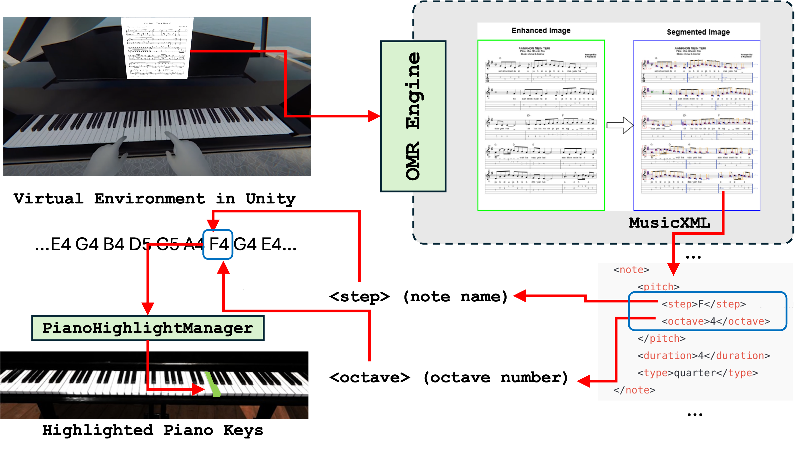

From Notes to Keys
A VR Learning Environment for Sheet Music Interpretation
Sandeep Khanna1,3,
Atanu Saha2,3,
Rahul Kumar Ray3,
Rakesh Patibanda4,
Chiranjoy Chattopadhyay3
1Indian Institute of Technology Jodhpur, Jodhpur, India •
2Ramakrishna Mission Vivekananda Educational and Research Institute, Belur, India •
3FLAME University, Pune, India •
4Monash University, Australia
International Conference on Document Analysis and Recognition. September 16-21, 2025. Wuhan, Hubei, China.
Summary
- Motivation: Learning to interpret sheet music and play piano is challenging for beginners due to the lack of real-time feedback and cognitive demands.
- Problem: Existing platforms do not offer seamless sheet music recognition or intuitive guidance.
- Proposed Solution: We present a novel system that integrates Optical Music Recognition (OMR) and Virtual Reality (VR).
- Technical Innovation:
- OMR Module: Enhances note detection with scale and rotation invariance.
- VR Guidance: Maps detected musical notes to corresponding piano keys.
OMR Architecture

Unified framework for music sheet segmentation: pre-processing (rotation correction, enhancement), U-Net-based staff and symbol segmentation.
System Schematic

Schematic of the system: OMR converts sheet music to MusicXML, which drives key highlighting in a Unity VR piano for real-time, interactive learning with Meta Quest 3.
MusicXML Generation Algorithm
- Input: Musical symbols 𝒮 = {sᵢ = (tᵢ, xᵢ, τᵢ, dᵢ, 𝒜ᵢ)}
- Phase I: Symbol Processing
- Sort 𝒮 by track tᵢ and position xᵢ
- Partition into tracks 𝒯ₖ for k ∈ {1..m}
- Phase II: Temporal Quantization
- Apply quantization 𝒬 to positions xᵢ
- Set time signature σ = (n, 2ᵖ)
- Compute measure duration μ = (n·4)/2ᵖ
- Phase III: Alignment
- Build alignment graph 𝒢_B between positions and symbols
- Compute maximum matching ℳ
- Phase IV: Measure Filling
- For each measure l and track k:
- Add rests where ∑dᵢ < μ
- Phase V: XML Generation
- Transform symbols to XML elements 𝒯_XML
- Structure document 𝒳 = (𝒳_head, 𝒳_part)
- Return MusicXML 𝒳
Contributions
- Methodological: Proposed a scale- and rotation-invariant OMR with a structured pipeline linking OMR outputs to real-time VR.
- Artifact: Developed a prototype converting sheet music into an interactive VR piano in real-time.
- Empirical: Evaluate the impact of the OMR-VR system on engagement and skill acquisition.
VR Guidance

- OMR to MusicXML: Sheet music converted using OMR into MusicXML.
- Unity 3D VR Piano: Realistic virtual piano with interactive keys.
- Key Highlighting: Keys dynamically highlighted based on MusicXML.
- Hand Tracking: Users play highlighted keys using virtual tracked hands.
- Spatial Audio: Piano sounds play in the key location.
Experimental Results
Rotation Invariance

Left: Rotated image

Middle: After correction

Right: OMR output
Scale Invariance

Left: Blurred input

Middle: Real-ESRGAN enhanced

Right: Segmentation via U-Nets
Quantitative Results
| First Set |
Second Set |
| Blur |
OEMER |
Ours |
Blur |
OEMER |
Ours |
| 13 |
0.91 |
0.96 |
27 |
0.74 |
0.89 |
| 15 |
0.89 |
0.95 |
29 |
0.71 |
0.88 |
| 17 |
0.87 |
0.94 |
31 |
ND |
0.62 |
| 19 |
0.84 |
0.94 |
33 |
ND |
0.50 |
IoU scores for segmentation (OEMER vs Ours) under varying blur (DeepScoresV2).